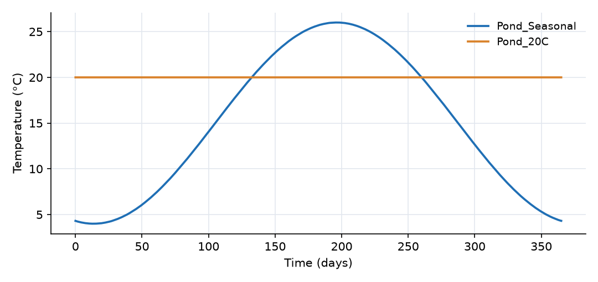
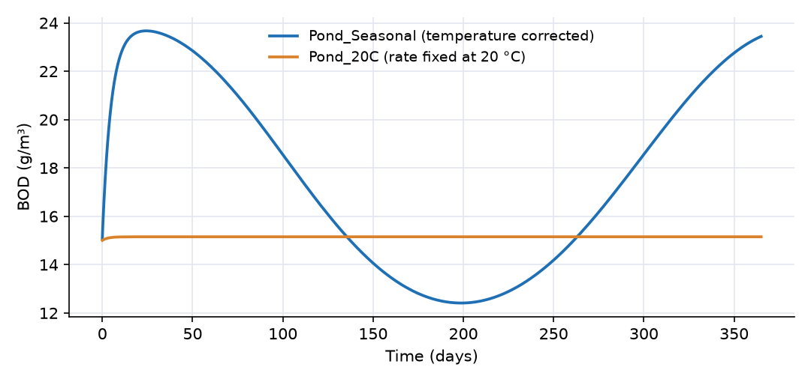

What this model represents
Biological and chemical reaction rates in natural and engineered waters change with temperature, typically roughly doubling for every 10 to 15 °C of warming. Treatment ponds and lagoons, which are not heated, therefore perform very differently in winter and summer. Design manuals handle this with the θ (theta) model: a rate measured at 20 °C is corrected to the water temperature T by k(T) = k20 · θ^(T − 20).
This model runs two identical BOD-removing ponds side by side for one year. One follows a seasonal temperature cycle, the other is held at 20 °C, which is equivalent to using the laboratory rate constant without correction. The difference between them is the error made by ignoring temperature.
The example also shows a modeling technique that differs from the one in the Multi-Species Reaction Network example. There, the built-in Arrhenius option of a ReactionParameter links a rate constant to one temperature series, which then applies to every block in the model. Here, temperature is a TimeDependent_ReactionParameter, whose value is set separately in each block. One reaction, with one rate expression, therefore runs at a different temperature in each pond.
How it works
Reaction parameters. The model has three:
| Parameter | Type | Value |
|---|---|---|
| k20 | ReactionParameter | 0.23 per day |
| theta | ReactionParameter | 1.047 |
| T_water | TimeDependent_ReactionParameter | a time series per block (°C) |
k20 and theta are plain constants: their own Arrhenius factor is set to 1, so their value equals their base value. T_water has no model-wide value. Instead, each block that holds the constituent carries a property T_water:value pointing to a time-series file: water_temperature.csv for Pond_Seasonal and Receiving_Water, temperature_20C.csv for Pond_20C. When a rate expression in a block uses T_water, OpenHydroQual takes the value from that block's own series at the current time.
Reaction. BOD_decay has stoichiometric coefficient −1 for BOD and the rate expression
r = k20 · θ^(T_water − 20) · BOD
The temperature correction is written directly into the rate expression, so any functional form could be used in its place (for example an Arrhenius expression in absolute temperature, or an optimum curve).
Pond mass balance. Each pond is a Reactor block with constant volume V = 10,000 m³ and constant inflow Q = 1,000 m³/day at C_in = 50 g/m³. The outflow link removes Q at the pond concentration. Each pond is therefore a stirred tank:
dC/dt = (C_in − C) / τ − k(T) · C, τ = V/Q = 10 days
When k changes slowly compared with the pond's response time, C stays close to the steady state
C ≈ C_in / (1 + k(T)·τ)
Temperature forcing. The seasonal series is a smooth sinusoid with a mean of 15 °C and an amplitude of 11 °C, so k ranges from 0.11 per day at 4 °C to 0.30 per day at 26 °C.
What to look for in the results
- Seasonal effluent quality. In mid-January k = 0.11 per day and the steady state is 50 / (1 + 1.1) ≈ 23.8 g/m³. In mid-July k = 0.30 per day and it is 50 / (1 + 3.0) ≈ 12.4 g/m³. The computed effluent follows these values closely, peaking at about 23.7 g/m³ in late January and dropping to 12.4 g/m³ in mid-July.
- A short lag. The pond responds with a time constant of 1/(1/τ + k), between 2.5 days in summer and 4.8 days in winter. This is short compared with the seasonal cycle, so the effluent lags the temperature only slightly: by about 3 days in summer and 5 days in winter. The first winter peak, in late January, comes later still because the pond is also recovering from its initial condition.
- What the uncorrected model misses. Pond_20C stays at 50 / (1 + 2.3) = 15.2 g/m³ all year. Averaged over the year, the seasonal pond's effluent is about 17.4 g/m³. The uncorrected model therefore underestimates the annual mean effluent BOD by about 13%, and the winter effluent by about a third (15.2 against 23.7 g/m³). Winter is usually the season that controls compliance.
- Start-up. Both ponds start at 15 g/m³. The seasonal pond needs about two weeks to reach its winter level, so its first values reflect the initial condition.
Assumptions and limitations
- Temperature is prescribed, not computed from a heat balance. The series is synthetic; a measured record or a heat-budget model would introduce day-to-day variability.
- One θ value is applied over the whole range from 4 to 26 °C. In practice θ for biological processes is often higher at low temperatures, and activity can stop near freezing.
- BOD removal is lumped into a single first-order reaction. Oxygen supply, settling and biomass growth are not represented.
- The ponds are perfectly mixed, with constant flow and influent concentration.
- A model-wide time-dependent value (the same series for all blocks) can be obtained with the
TimeDependent_ReactionParameter_Globaltype, which reads one series for the whole model.
Model diagram
Hover a block or link to see its name and type. Arrows show the positive flow direction.
Components
Click a component to see every property set in the model file, with units and meaning.
Blocks 3
Storage compartments: each holds water (and dissolved or particulate mass) and has a state that evolves in time.
Pond_SeasonalReactor · mass_transferA completely mixed treatment pond of 10,000 m³ receiving 1,000 m³/day of water with 50 g/m³ BOD (residence time 10 days). Its water temperature follows the seasonal record in water_temperature.csv.
water_temperature.csv.Reactor: Reactor
| Property | Value | Unit | Meaning |
|---|---|---|---|
| BOD: Concentration | 15 | g/m3 | Computed as mass/(Storage+0.00001) |
| BOD: Constant Inflow concentration | 50 | g/m3 | |
| Initial Storage | 10000 | m3 | |
| Bottom elevation | 0 | m | |
| Constant Inflow | 1000 | m3/day | |
| T_water: value | water_temperature.csv |
Pond_20CReactor · mass_transferAn identical pond whose temperature is held at the 20 °C reference (temperature_20C.csv). It shows what a model with an uncorrected rate constant would predict.
temperature_20C.csv). It shows what a model with an uncorrected rate constant would predict.Reactor: Reactor
| Property | Value | Unit | Meaning |
|---|---|---|---|
| BOD: Concentration | 15 | g/m3 | Computed as mass/(Storage+0.00001) |
| BOD: Constant Inflow concentration | 50 | g/m3 | |
| Initial Storage | 10000 | m3 | |
| Bottom elevation | 0 | m | |
| Constant Inflow | 1000 | m3/day | |
| T_water: value | temperature_20C.csv |
Receiving_WaterReactor · mass_transferAn initially empty collection volume that receives the outflow of both ponds. It follows the seasonal temperature. It is only a sink and is not part of the comparison.
Reactor: Reactor
| Property | Value | Unit | Meaning |
|---|---|---|---|
| BOD: Concentration | 0 | g/m3 | Computed as mass/(Storage+0.00001) |
| Initial Storage | 0 | m3 | |
| Bottom elevation | 0 | m | |
| Constant Inflow | 0 | m3/day | |
| T_water: value | water_temperature.csv |
Links 2
Connections that move water (and the mass it carries) between blocks.
Outflow_SeasonalFixed flow · mass_transferFixed outflow of 1,000 m³/day from Pond_Seasonal, equal to its inflow, so the pond volume stays constant.
Fixed flow: Fixed flow
| Property | Value | Unit | Meaning |
|---|---|---|---|
| Flow rate | 1000 | m3/day |
Outflow_20CFixed flow · mass_transferFixed outflow of 1,000 m³/day from Pond_20C.
Fixed flow: Fixed flow
| Property | Value | Unit | Meaning |
|---|---|---|---|
| Flow rate | 1000 | m3/day |
Constituents 1
Substances or particles carried by the water.
BODConstituentBiochemical oxygen demand, a lumped measure of degradable organic matter (g/m³).
Constituent: Chemical constituent
| Property | Value | Unit | Meaning |
|---|---|---|---|
| Concentration | 0 | g/m3 | Computed as mass/(Storage+0.00001) |
| Constant Inflow concentration | 0 | g/m3 | |
| Diffusion Coefficient | 0 | m2/s | |
| Dispersivity | 0 | m | |
| Stoichiometric Constant | 0 |
Reaction parameters 3
Named coefficients used in reaction rate expressions.
k20ReactionParameterFirst-order BOD decay rate at 20 °C, 0.23 per day.
ReactionParameter: Reaction Parameter
| Property | Value | Unit | Meaning |
|---|---|---|---|
| Arrhenius temperature correction factor | 1 | ||
| Value | 0.23 | ||
| Reference Temperature | 20 |
thetaReactionParameterTemperature correction factor θ = 1.047, the classic value for BOD decay.
ReactionParameter: Reaction Parameter
| Property | Value | Unit | Meaning |
|---|---|---|---|
| Arrhenius temperature correction factor | 1 | ||
| Value | 1.047 | ||
| Reference Temperature | 20 |
T_waterTimeDependent_ReactionParameterWater temperature (°C) as a time-dependent reaction parameter of the block-specific kind: each block reads its own time series.
TimeDependent_ReactionParameter: Time Dependent Reaction Parameter
Reactions 1
Transformations among constituents, each with a stoichiometry and a rate expression.
BOD_decayReactionFirst-order decay of BOD with the temperature-corrected rate k20·θ^(T_water − 20)·BOD.
Reaction: Chemical reaction
(k20*theta^(T_water-20)*BOD)| Constituent | Stoichiometric coefficient |
|---|---|
| BOD | -1 |
Input files
water_temperature.csv | Daily water temperature (°C) versus time (days from 1 January), two columns, comma separated, no header. Synthetic seasonal cycle T = 15 + 11·sin(2π(t − 105)/365): 4 °C in mid-January, 26 °C in mid-July. |
temperature_20C.csv | Constant 20 °C from day 0 to day 365, used for the reference pond. |
Simulation settings
| Start time | 0 |
| End time | 365 |
| Initial time step | 0.1 |
| Write interval (steps) | 10 |
Results
Produced by running the downloaded model unchanged.

